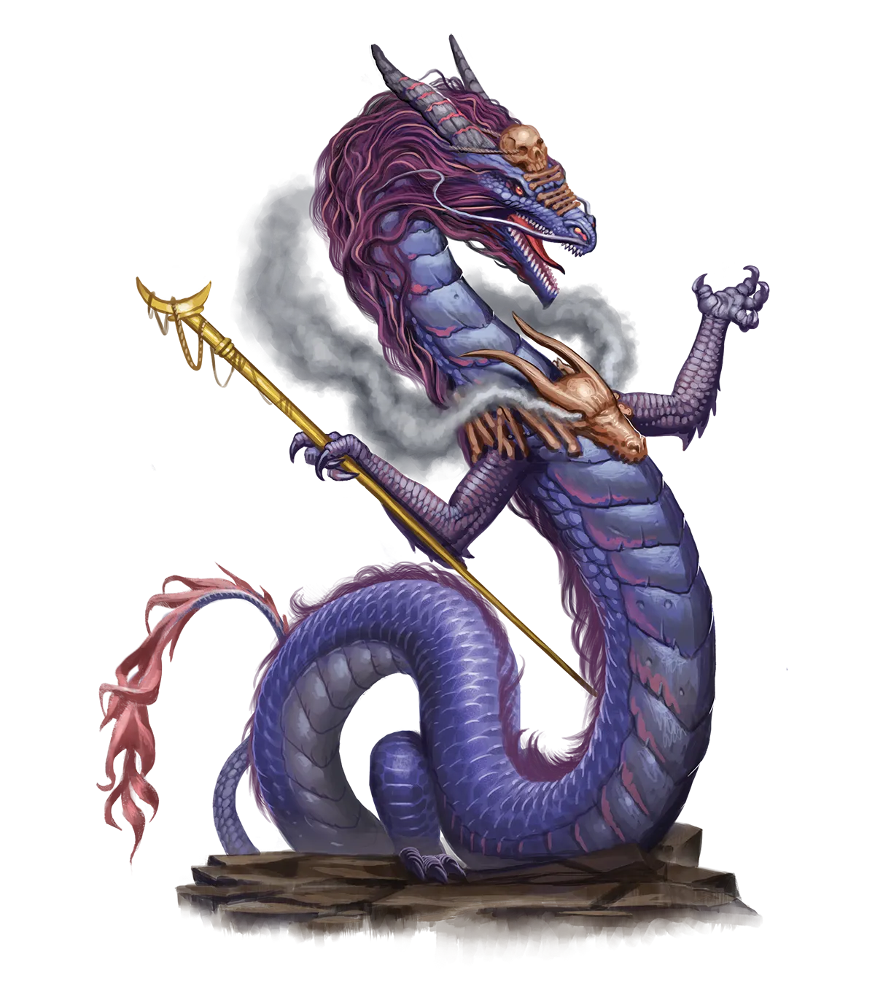
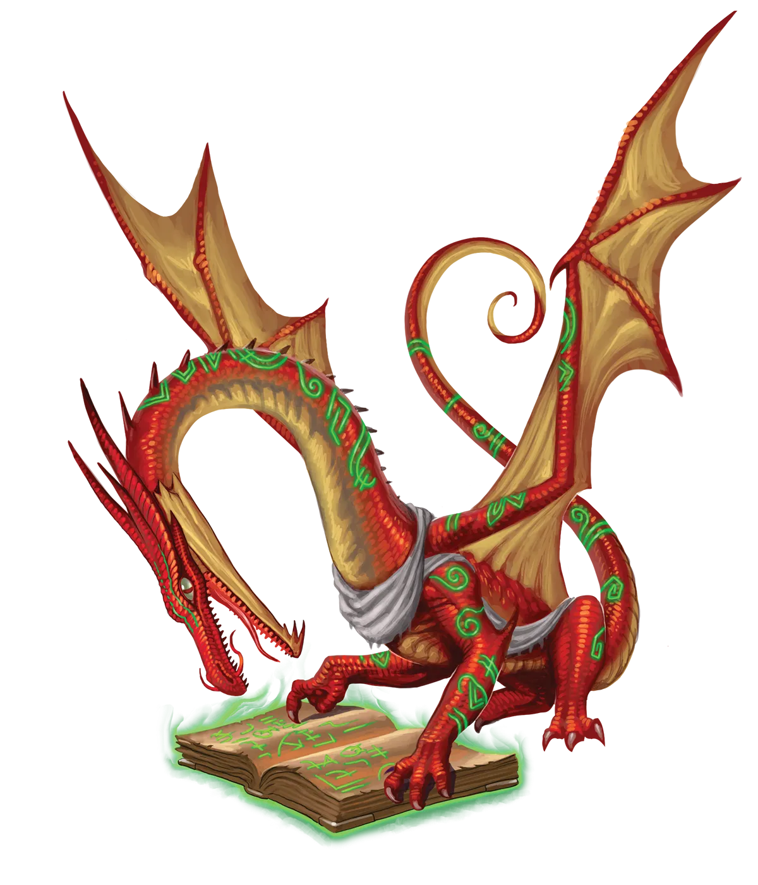
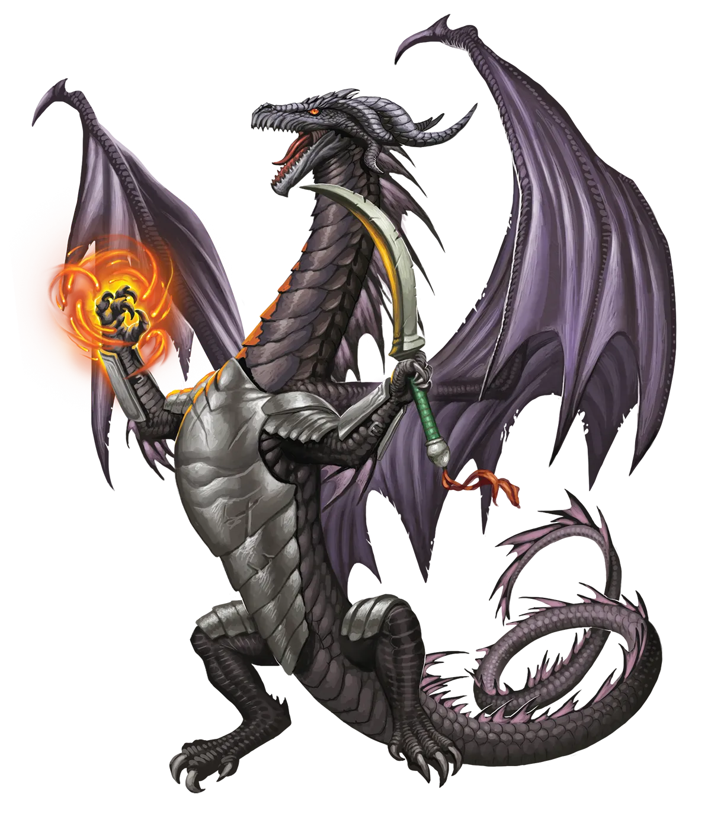

变体：更常见的变形
本书假设永光龙是稀有的，并且不会因为其种族而遭受任何特别的不利。在那些需要龙类角色隐藏其龙族血脉的战役中，或者在那些龙类通常会伪装自己混迹于类人聚落中的战役中，可以考虑允许龙类角色获得变形天赋以取代其黑暗视觉，或者直接免费获得该天赋（但如果你将其设为免费，请记得给秘仪龙一个额外的增益）。

第一章：巨龙先祖
超乎想象的古老，如传说般强大，巨龙令世界各地所有的其他先祖为之敬畏、恐惧，并受到激励。在某些文化中，龙类就是力量本身的象征。在另一些文化中，龙类是统治权的先驱。但对龙类自身而言，这仅仅就是它们本来的样子。这个简单的事实，从根本上影响了龙类与其他先祖之间的关系。但并非所有龙类都像人类故事书中所描绘的那样生活――它们守着一洞的宝藏沉沉睡去，直到某个鲁莽的冒险者胆敢挑战它们，觊觎它们的藏宝。但有时候，冒险者才是巨龙！
龙类是魔法生物，体内充斥着如此庞大的力量，以至于其他先祖有时很难认识到龙类赖以生存的陷阱中有多大一部分依赖于魔法。即使是最初出茅庐的冒险者也可能意识到，龙类的特殊喷吐武器可能是魔法。但龙类的大部分魔法更为精妙，它们将魔法用于基本的生理过程，就像鱼游动和呼吸水一样。例如，龙鳞中积聚的惊人恢复力，源于魔法在鳞片中的持续流动，随时间推移不断增强其强度。这一原则同样适用于龙类的身体其他部分，使得龙类随着时间推移变得越来越强大，这与其他随成长达到体能巅峰便开始衰退的生物截然不同。
此外，龙类需要消耗巨量的魔法才能飞行。通常，以龙类的体型和质量，仅仅依靠翅膀是无法保持飞行的。而龙类则以巨大的魔法消耗来增强它们的翅膀，使它们不仅能够克服自身质量飞行，还能以极快的速度飞行。
<2>永恒之光仪式龙类的魔法潜能是巨大的，通过日复一日、年复一年、一个世纪又一个世纪地反复使用这些魔法通路，龙类会变得异常强大。但这个过程是缓慢的。而一旦延迟的满足存在，就总会有人迫不及待的创新者，寻求更快、更容易达成目标的方法。大多数此类尝试要么注定失败，要么催生了通过独特且完全无法复制的特定外部因素而迅速获得强大力量的龙类。但被称为永恒之光仪式的神秘仪式却从所有其他尝试中脱颖而出。这个仪式笼罩在神秘之中，关于其起源的相互矛盾的故事，比在巨龙会议上关于如何妥善整理宝藏的观点还要多。
虽然只有少数龙类知晓如何执行这一仪式，但所有龙类都了解其效果，既包括它能提供给龙类的巨大益处，也包括龙类必须付出的代价。永恒之光仪式设计精巧，融合了物理变化、类似于解析地脉时使用的能量调制、时间魔法和灵魂魔法，同时改变了物质与形而上的自我。
尽管首先需要多种深度先进的魔法技术来创造这个仪式，但对于任何龙类来说，学习执行仪式的秘密却出乎意料地简单。直观地理解仪式效果的最佳方式是：受术者，无论是施展仪式的龙类还是自愿参与的龙类，试图跨越时间和命运，将本应在整个生命周期中流经身体通路的全部魔法，在同一时刻同时引导通过自身。如果这看起来极度危险，并且很可能产生严重的副作用和代价，那是因为它确实如此。但回报也同样巨大。
<2>永光龙如果一切按计划进行，龙类体内的魔法通路将永久改变，在短期内，其一些常规功能效率略有下降，换取的是通路速度和容量的大幅提升，以及随时间学习和成长的能力。一个普通龙类可能需要数百年甚至数千年才能获得的实力增长，现在只需短短几年就能实现，如果龙类参与不断增强压力的激烈情境以使其通路达到极限，速度甚至更快。
一些对永恒之光仪式持谨慎态度的龙类声称，该仪式会缩短龙类的自然寿命，但目前没有任何办法能证实这一说法。这似乎只是某些人凭直觉认为必然如此，因为它从你的未来汲取力量，那么这不就意味着必须以牺牲未来为代价吗？仪式的支持者则指出缺乏证据，或者指出一些在仪式后没有出现明显问题而活到古龙期的龙类作为例子。确实，许多获得仪式好处（被称为永光龙）的龙类英年早逝，但造成混淆的因素是，该仪式鼓励这些龙类为快速获得力量而采取冒险行动，而要将这两件事彻底区分开来是不可能的。
变体：更常见的变形
本书假设永光龙是稀有的，并且不会因为其种族而遭受任何特别的不利。在那些需要龙类角色隐藏其龙族血脉的战役中，或者在那些龙类通常会伪装自己混迹于类人聚落中的战役中，可以考虑允许龙类角色获得变形天赋以取代其黑暗视觉，或者直接免费获得该天赋（但如果你将其设为免费，请记得给秘仪龙一个额外的增益）。

永光龙的外观与未执行永恒之光仪式的同类龙类大体相似。然而，仍有蛛丝马迹可循，尤其是对于那些能感知魔法流动的生物而言。永光龙的魔法在仪式那一刻被大幅削弱，但随后会成为一股不可阻挡的力量，迅速成长并适应每一次经验，这对于能看到魔法流动的生物来说是可见的。即使对其他生物，也有迹象。例如，体型较大的龙在仪式后会缩小到大约兽人大小，需要一个熟练而刻意努力才能再次成长得更大。这意味着，虽然冒险者通常可以根据龙类的体型猜测其力量，但永光龙可能远比其体型所显示的要强大得多，也更为年老、聪明，且情绪上更为成熟。
永光龙的鳞片也非常轻微地反映出新的魔法流动，其色彩图案与仪式前相似但不完全相同。然而，注意到如此细微的差异，需要极其敏锐的眼力、对龙类旧鳞片颜色模式的深入了解，或者在大多数情况下两者兼备。当然，由于永光龙有时会使用护甲和武器，这是一种传统龙类几乎普遍憎恶的做法，所以龙的装备有时也许会成为一眼识别永光龙身份的最明显线索。
然而，有些先祖比其他先祖更难区分。例如，彩绘龙的鳞片反射几乎不可能在不进行广泛分析的情况下注意到，因此选择保持较小体型的永光色彩龙通常可以冒充年轻的传统派。这可能使一个极其强大的永光色彩龙可以伪装成一个弱小的传统龙，导致敌人严重低估它们。
<2>属于它们的一席之地永光龙没有建立自己的社会，因此它们常常参与其他龙类或短命先祖的社会，只要能找到接纳，它们就享受两者，但永远无法完全融入其中任何一个。它们从传统龙那里获得的确切礼遇取决于龙类社群的细节，并因龙族先祖而异，尽管几乎永远不会与仪式之前完全相同。许多龙族先祖的传统派会以不赞、失望或公开的敌意来回应。少数传统龙类不会像以前那样对待他们的永恒族人，或者努力理解永光龙与传统龙之间的差异，并以宽容的态度行事。无论与其他龙类的情况如何，永光龙都与其他永光龙有特殊的亲缘关系。
与类人生物及其同类互动的情况更为多样，取决于龙类的态度和以类人形态融入其中的能力。尽管如此，虽然这种隔阂并不总是坏事，有时源于敬畏和尊重，但最终，即使与最善意的类人文化相比，龙类依然是一个“异类”。在许多方面，冒险队伍是永光龙最能感到归属感的地方，尤其是在其他永光龙之中。其他先祖的冒险伙伴可能无法分享永光龙的生活经历，但他们共享一个使命、一股将他们与其他人区分开来的强大力量，以及一个变强的野心。
<2>永恒羁绊成功的永恒之光仪式会冲刷数百年的原始潜能，以至于该过程能治愈龙类的所有疾病，甚至是危及生命的状况。龙类还可以选择使用另一条龙，甚至非龙类生物作为能量的传导器，让该生物同样获得被完全治愈的好处，并可能增加该生物的寿命（如果它不是龙类）。通过分享龙类整个生命周期中的全部先前潜能，传导器在形而上的层面上与龙类联系在一起，这可能会产生各种不寻常的副作用，例如采纳彼此的一些举止习惯，或者在他们的生活中，他们再次随机相遇的可能性会莫名其妙地增加。
<2>与过去决裂
与同先祖的传统龙相比，永光龙与特定阵营的联系要弱得多，它们可以是任意阵营。然而，无论其先祖之龙通常拥有何种阵营，都可能塑造了永光龙对他人的看法及其可能的行事方式，因此了解这种阵营仍然是有益的。这种减弱的联系甚至对位面龙也是如此，它们会侵蚀其位面对其心智和命运的影响；对虚空龙也是如此，它们会切断本会不可避免地吞噬其理智的虚空腐败的连接。
选择崇拜神�o的永光龙最常崇拜龙神，但它们比其他龙类更有可能与其他文化中流行的神�o的教义产生共鸣。他们对宗教的选择符合他们作为永光龙的新生活角色，而不是共享其先祖的传统龙类的先入为主的假设。
<2>龙的名字许多永光龙沿用仪式前的名字，通常是一个冗长的龙语名。然而，越来越多的龙决定在作为永光龙重生后取一个新名字，以象征新的开始。这在试图割断与其他龙类旧有联系的永光龙中更为常见，因为新名字会使它们的过去更难追上它们。新名字可能与原名一样传统，但也可能通过其他多种方式获得，例如因伟大事迹获得的头衔，甚至是一个通用语中的简单描述性词语。
龙名：艾希瓦伦，恶魔末日，无敌，卡利赞德雷克斯，巫妖杀手，撼山者，黑曜石，抄写员，阴影，瓦尔瓦克谢林德瑞。
龙与龙裔
永光龙与龙裔之间的关系这是最复杂的。与许多传统龙类似，一些龙裔对永恒之光仪式及其据称提供的好处持怀疑态度。虽然龙裔能够理解龙类在年轻时或为救他人性命而执行仪式的动机，但许多人根本无法理解为什么一条成年龙会自愿放弃它那宽阔的翅膀和毁灭性的喷吐武器，即使只是暂时如此。对这些龙裔来说，永恒之光充其量是一种不经思考的浪费，最糟糕的则是对他们高贵而自豪血统的彻底背叛。
一些永光龙对表达这种感受的龙裔所保留的轻蔑，并不能平息这些疑虑。尽管许多永光龙更愿意与龙裔和睦相处，但一些傲慢的永光龙则可怜他们“低等”的表亲，而另一些则对它们怀有彻头彻尾的蔑视。还有一些永光龙实际上嫉妒龙裔，能够无需永恒之光仪式就能快速进步，并且不必像永光龙那样为达到这种状态而挣扎，甚至可能破坏关系。
一如既往，就龙类而言，这些态度差异巨大。拥有共同先祖的龙和龙裔可以非常友好，将对方视为自己大家族的一员。即使是传统上会成为敌人的个体――例如红龙与金龙的后裔――也曾被知道能够克服祖先的偏见，建立起持久的羁绊。
你的巨龙角色拥有诸多特质，其中一些取决于其巨龙先祖。
属性值提升。 你选择的一项属性值提升1点。
年龄。 任何年龄的巨龙都可以执行永恒之光仪式，因此即便是刚成年的永光龙，从严格意义上讲也可能已有数千岁。然而，仪式那令人惊叹的魔力会抹去衰老的影响。刚完成仪式的年轻永光龙充满青春的活力与惊人的潜力。尽管一些学者不以为然，但永光龙的寿命可以与其传统派同胞一样长久，除非暴力或其他悲剧使其生命戛然而止。
阵营。 永光龙的先祖极大地影响了他们的信念，但影响程度远不及同种传统派巨龙。例如，银色的永光龙常常是善良的捍卫者，而黑色的永光龙则倾向于狡诈与卑鄙。然而，永光龙深知他们的龙之血脉不必决定其命运。任何永光龙都没有理由不能抛弃祖先之道，去追寻属于自己的道路。
体型。 除非永光龙将魔法专注于增大自身体型（许多都如此），否则他们不会比更常见的类人种族成员更大。你的体型可以选择小型或中型。
速度。 你的基础步行速度为30尺。
黑暗视觉。 你继承了传统派巨龙敏锐的感官。你可以在60尺范围内的微光光照中视物，如同在明亮光照中一样，在黑暗中视物如同在微光光照中一样。你在黑暗中无法辨别颜色，只能看到灰色阴影。
巨龙先祖。 你拥有巨龙血脉。从龙族血统表格中选择一种龙。每种巨龙先祖都与特定的伤害类型相关联（例如，红龙与火焰相关）。此外，你的先祖决定了你吐息武器（如果有）的性质，并赋予你额外的巨龙特质。如果某个先祖列出多种伤害类型并使用“和”，意味着吐息武器的伤害一半为此类型，一半为彼类型。如果使用“或”，则意味着你在创建角色时选择其中一种类型，之后除非你的先祖另有说明，否则此决定不可更改。
龙之馈赠。 你从龙类职业所列的选项中获得一项龙之馈赠。如果一项赠礼有先决条件，你必须满足这些条件才能获得它。
龙类。 你的生物类型为龙类，而非类人。
天生武器。 除了你正常的徒手打击外，你还获得两种天生武器攻击：啃咬攻击和爪击攻击。你的啃咬攻击造成1d6点穿刺伤害。你的爪击攻击造成1d4点挥砍伤害。你至少需要有一只手空闲才能进行爪击攻击。你的爪击攻击的攻击和伤害检定可以使用敏捷而非力量，但啃咬攻击不能。
语言。 你可以说、读、写通用语和龙语。
<2>巨龙先祖每种类型的真龙都代表着一种独特的巨龙先祖，拥有独特的外观、文化和特殊能力。你的巨龙先祖决定了你的龙族家族：你所归属的更广泛的龙类类别（多彩、秘奥、帝龙、莱西、金属、外域、位面、原初或狂野）。你的先祖还决定了你吐息武器的性质，并赋予你一项属性值加值以及一个或多个额外特质。
<2>巨龙种族<3>琥珀你是恶名昭彰的八卦与情报贩子世系的后裔。
<3>末日你是破坏者与毁灭者世系的后裔。
<3>星界你是来自星界的骄傲心灵巨龙世系的后裔。
<3>黑你是统治沼泽的卑鄙孤僻者世系的后裔。
<3>极乐你是宁静治愈者世系的后裔。
<3>蓝你是沉着老练、见多识广的操纵者世系的后裔，他们通过阴谋之网夺取权力。
<3>黄铜你是独立健谈者世系的后裔，他们拥有无法满足的好奇心和短暂的注意力。
<3>卤水你是来自水元素位面的巨龙世系的后裔，痴迷于严格的礼节和纪律。
<3>青铜你是坚忍学者与知识守护者世系的后裔。
<3>蔚蓝你是探险家与冒险者世系的后裔。
<3>云你是来自气元素位面的好奇巨龙世系的后裔，他们热爱漫游与探索。
<3>赤铜你是狡猾恶作剧者与富有同情心的享乐主义者世系的后裔。
<3>墓穴你是灵魂守望者世系的后裔。
<3>水晶你是来自土元素位面的自负但善心的巨龙世系的后裔。
<3>梦你是梦域主宰与守护者世系的后裔。
<3>谕令你是为对抗腐败而存在的秩序规划者世系的后裔。
<3>以太你是来自以太位面的务实生存主义者世系的后裔。
<3>森林你是嫉妒的自然守护者世系的后裔，他们憎恶技术与文明。
<3>金你是睿智而强大的顾问与领袖世系的后裔。
<3>绿你是执着而一丝不苟的学者世系的后裔。
<3>彩衣你是聪明而洞察力强的弄臣世系的后裔。
<3>浩劫你是无法不惹麻烦的激情艺术家世系的后裔。
<3>靛蓝你是自由奔放的派对爱好者世系的后裔。
<3>炼狱你是暴虐交易掮客世系的后裔。
<3>月你是爱管闲事的跨位面观察者世系的后裔。
<3>熔岩你是来自火元素位面、鲁莽且不可预测的巨龙世系的后裔。
<3>梦魇你是来自梦域的恐怖艺术家世系的后裔。
<3>秘奥你是博采众长的学者世系的后裔，他们一生中大部分时间都以类人形态伪装自己。
<3>天堂你是捍卫正义事业者世系的后裔。
<3>红你是骄傲自大的巨龙世系的后裔，他们以武力夺取控制权。
<3>裂隙你是喜欢破坏东西的狂暴巨龙世系的后裔。
<3>海你是善良但反复无常的天气主宰者世系的后裔。
<3>银你是侠义正义捍卫者世系的后裔。
<3>天空你是向有需求者提供建议和援助的宗教传统派世系的后裔。
<3>日曜龙你是相信自己创造了所有生命的傲慢巨龙世系的后裔。
<3>君王你是微妙的操纵者、谈判者和国王制造者世系的后裔。
<3>时间你是观察历史进程的巨龙世系的后裔。
<3>毒蕈你是群居于大型聚居地的美食家世系的后裔。
<3>骚动你是寻求变化的反复无常者世系的后裔。
<3>暗影你是暗影位面上猎杀亡灵的巨龙世系的后裔。
<3>冥界你是天生炼金师与囤积者世系的后裔。
<3>朱红你是热爱讲述夸张冒险故事的寻求刺激者世系的后裔。
<3>虚空你是腐化毁灭者世系的后裔。
<3>漩涡你是跨位面信使世系的后裔。
<3>白你是野蛮而具有掠食性的生存主义者世系的后裔。